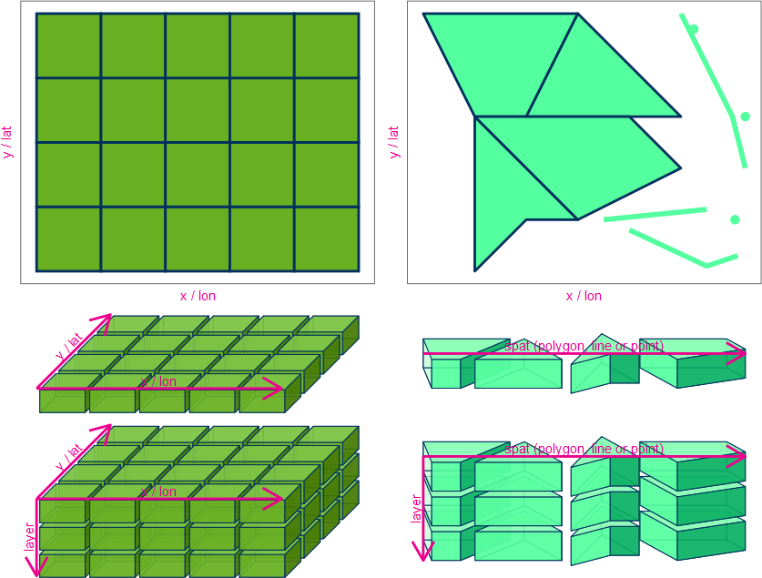

Temporal-spatial data structures
Macro dimensions (Dim)

From a macro perspective, TimeSpatData is always defined in three dimensions:
Time: timestampsSpat: spatialVari: multiple variables
However, the Spat dimension actually has a different and complex form,
as it is based on geological data raster and vector.
In the vertical direction, we only support the layer dimension.
This is not the physical vertical dimension like x and y,
but rather an extracted layer as a homogeneous layer.

Data structure (array) dimensions (dim)
During the data-processing and -storage, the data is always given in array form, the macro dimensions cannot be clearly defined in an array dimension, therefore the array dimensions are redefined:
time
Dimension time is defined for time and has backward consistency. It always stands in the first dimension, with two possible options:
continuous: With a fixed time step, defined byunitsandoriginal_timediscrete: Without the concept of time step, but always giving the exact timestamps
spat in horizontal
Dimension spat is defined for vector spatial data (points, lines, and polygons).
It is not ordinal, but is linked to the Spat_ID and Spat_Data variables.
The coordinate reference system (CRS) is defined using an EPSG-code.
x und y in horizontal
Die beide Dimensionen sind für Raster (einzeln Schichten) horizontal Koordinate definiert mit die Koordinaten-Werten von zentralen Punkten des Zells. Das CRS ist mit EPSG-code definiert. Deshalb ist es nicht erlaubt die Einheit oder andere zusätzliche Sachen von den beiden Dimensionen zu definieren.
The two dimensions x and y are defined for raster data in single layers.
They represent the horizontal coordinates of the central points of cells in the raster.
The coordinate reference system (CRS) is defined using an EPSG-code.
It is not allowed to define units or other additional information for these dimensions.
Data type (name)
Spat
Due to the variety of spatial data forms, there are four Spat-Form listed below:
Vect [spat]: Vector data (points, lines, polygons)VectLayer [spat, layer]: Vector data with multiple layersRast [x, y]: Raster data in a single layerRastLayer [x, y, layer]: Raster data with multiple layers
Vari
Due to the different properties of variables, the following four Vari-Form are defined:
Vari [vari = 1] / []: single variableArray [vari]: multiple variables with the same data-structure and -size
In summary, a complete TimeSpatData must define the three macro dimensions (not data dimensions).
Processing Tools
Under the TSD structure, there are four main tools: read, write, crop, and extract. For more details, see the section read_tsd, write_tsd, crop_tsd and extract_tsd.